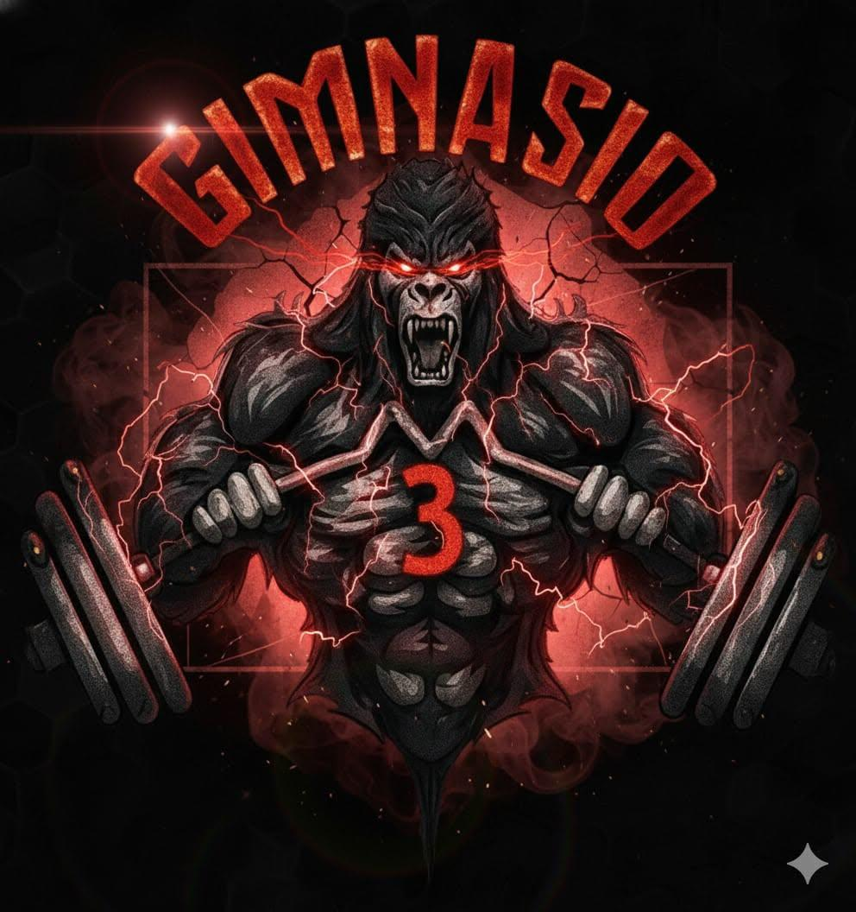

Tocá o seleccioná una imagen para verla en grande.

M3 · GIMNASIOEntrená con intenciónExplorá ejercicios por grupo muscular y observá cada movimiento en dos posiciones. Tocá cualquier imagen para ampliarla. Si estás aprendiendo una técnica nueva, pedí orientación al equipo del gimnasio.
Tocá o seleccioná una imagen para verla en grande.